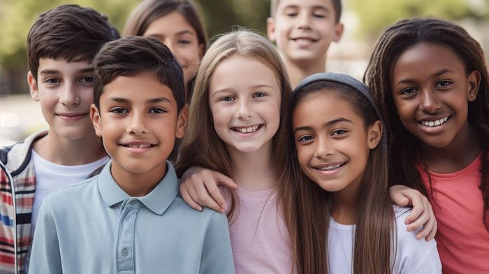

O Projeto Lar do Amor é um exemplo inspirador de solidariedade e cuidado para com crianças e adolescentes em
situação de vulnerabilidade. Através do acolhimento e encaminhamento para serviços e cursos, o projeto não apenas
oferece um lar seguro, mas também oportunidades para que esses jovens possam desenvolver seu potencial e construir
um futuro promissor.
O cuidado amoroso proporcionado pelo Lar do Amor é essencial para o bem-estar emocional e psicológico dessas
crianças e adolescentes, permitindo-lhes superar traumas e desafios. Além disso, ao encaminhá-los para serviços
sociais e cursos profissionalizantes, o projeto contribui diretamente para a construção de autonomia e autoestima,
preparando-os para uma vida adulta mais estável e realizada.
A importância do Projeto Lar do Amor vai muito além do cuidado material, pois também promove a inclusão social e a
formação cidadã desses jovens, mostrando-lhes que são dignos de amor, apoio e oportunidades. É um exemplo valioso
de como a comunidade pode se unir para oferecer esperança e um futuro melhor para as gerações futuras.